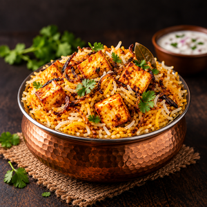

Paneer Biryani

Description
Paneer Biryani is a flavorful vegetarian rice dish made with aromatic basmati rice, spiced yogurt-marinated paneer, fried onions, fresh herbs, saffron and whole spices. The rice and paneer are layered and slow-cooked using the traditional dum method, allowing the flavors and aroma to blend beautifully.
Preparation Time
- Prep Time:
- Cooking Time: 20 minutes
- Total Time: Approximately 1 hour 5 minutes
- Servings: 3
Note: The preparation time includes soaking and marinating
Cooking Time
20 minutes
- Rice preparation: ~10-15 minutes
- Dum cooking: ~15-20 minutes
The final dum stage can be done on the stovetop or in an oven.
Ingredients
For the Biryani
- 1 cup basmati rice
- 200-250 g paneer, cubed
- 1 large onion, thinly sliced
- ½ cup fresh curd/yogurt
- 1 tbsp ginger paste
- 1 tbsp garlic paste
- 1 green chilli, chopped
- 1 tbsp coriander leaves, chopped
- ½ tbsp mint leaves, chopped
- ¼ tsp turmeric powder
- ¼ tsp red chilli powder
- ¼ tsp garam masala
- ½ tsp coriander powder
- ¼ tsp shahi jeera
- 1 tsp lemon juice
- Salt to taste
Whole Spices
- 1-inch cinnamon stick
- 1 bay leaf
- 2-3 cloves
- 2-3 green cardamoms
- ¼ tsp shahi jeera
For Garnishing
- ¼ cup milk
- 16-18 saffron strands
- 1-2 tbsp ghee
- Fried onions
- Fresh coriander
- Fresh mint
The ingredient proportions are adapted from a traditional dum-style paneer biryani recipe.
Instructions
Step 1 - Prepare the Rice
- Wash 1 cup basmati rice until the water becomes relatively clear.
- Soak the rice for about 30 minutes.
- Bring around 4 cups of water to a boil.
- Add cinnamon, bay leaf, cloves, cardamom, shahi jeera and salt.
- Add the soaked rice.
- Cook until the rice is approximately 75% cooked.
- Drain the rice and keep it aside.
Step 2 - Fry the Onions
- Thinly slice the onion.
- Heat oil or ghee in a pan.
- Fry the onions over medium-low heat until golden brown.
- Remove and place them on a paper towel.
- Keep the fried onions aside for layering.
Step 3 - Marinate the Paneer
- Add curd to a bowl and whisk until smooth.
- Add ginger paste, garlic paste and green chilli.
- Add turmeric, red chilli powder, garam masala and coriander powder.
- Add lemon juice and salt.
- Add chopped coriander and mint.
- Add paneer cubes and some fried onions.
- Mix gently.
- Cover and marinate for approximately 30 minutes.
Step 4 - Prepare Saffron Milk
- Warm ¼ cup milk.
- Add saffron strands.
- Mix and allow the saffron to infuse into the milk.
Step 5 - Layer the Biryani
- Add some of the leftover onion-frying oil or ghee to a heavy-bottomed pot.
- Add the marinated paneer.
- Spread the partially cooked rice over the paneer.
- Add the remaining fried onions.
- Sprinkle coriander and mint.
- Pour the saffron milk over the rice.
- Add 1-2 tablespoons of ghee.
Step 6 - Dum Cook
- Cover the pot tightly with a lid.
- Cook on medium heat for about 5 minutes.
- Reduce the heat to low.
- Continue cooking for approximately 12-15 minutes.
- Turn off the heat and let the biryani rest for a few minutes.
- Gently fluff the layers before serving.
Serve hot with raita, plain curd, salad or salan.
Nutrition Table
Approximate nutrition per serving for the referenced 3-serving recipe:
| Nutrient | Amount |
|---|---|
| Calories | 694 kcal |
| Carbohydrates | 62 g |
| Protein | 17 g |
| Fat | 42 g |
| Saturated Fat | 16 g |
| Fiber | 3 g |
| Sugar | 5 g |
| Sodium | 1632 mg |
| Calcium | 453 mg |
| Iron | 1 mg |
| Potassium | 294 mg |
| Magnesium | 39 mg |
| Phosphorus | 153 mg |
| Vitamin C | 7 mg |
| Vitamin B12 | 1 µg |
Important: nutrition values are estimates and can change significantly depending on the paneer, amount of oil/ghee, rice quantity and serving size. The cited recipe lists approximately 694 kcal per serving.